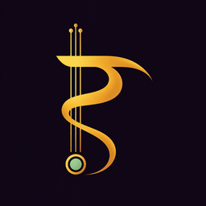
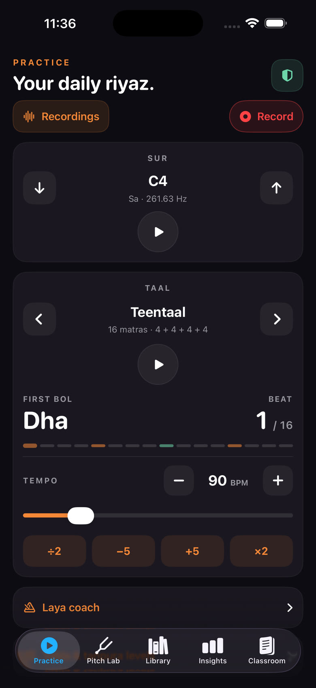
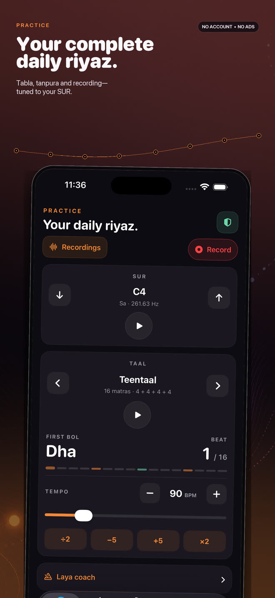
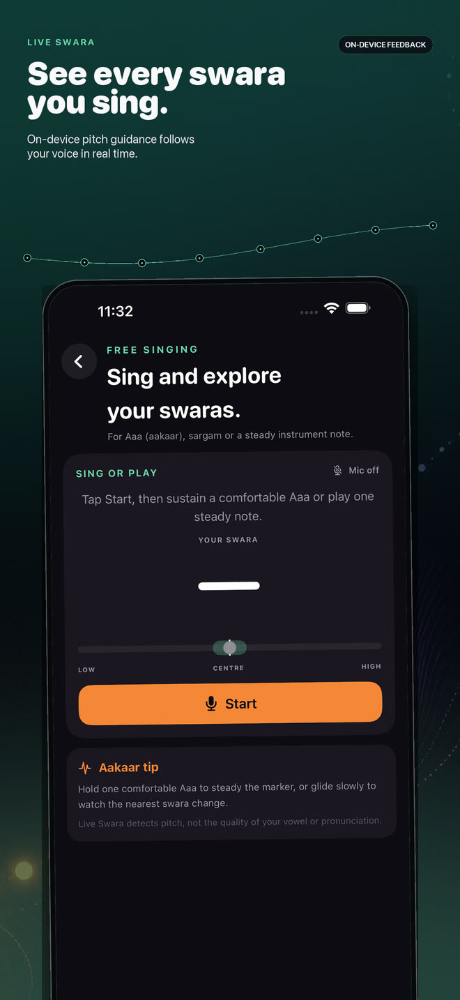
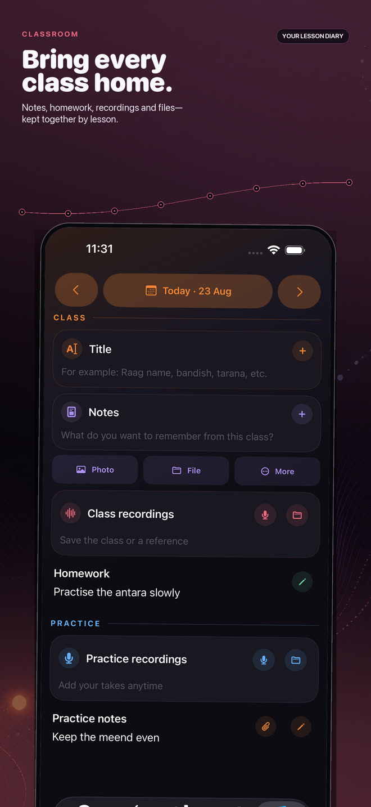
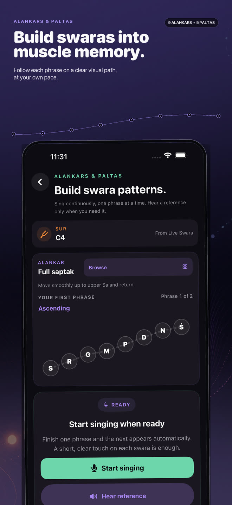
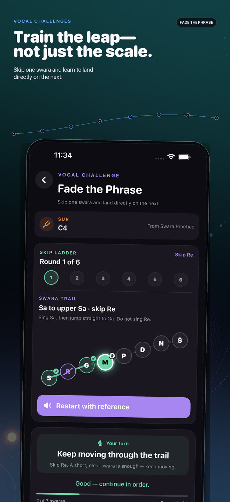
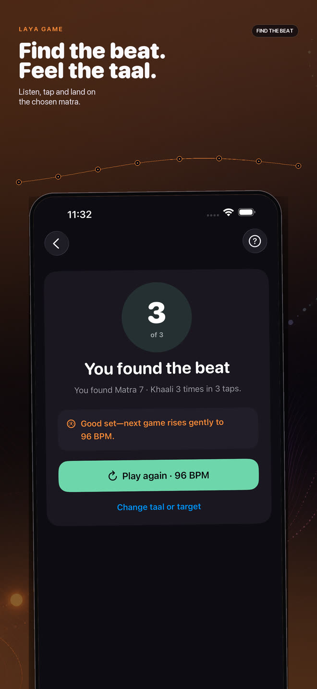
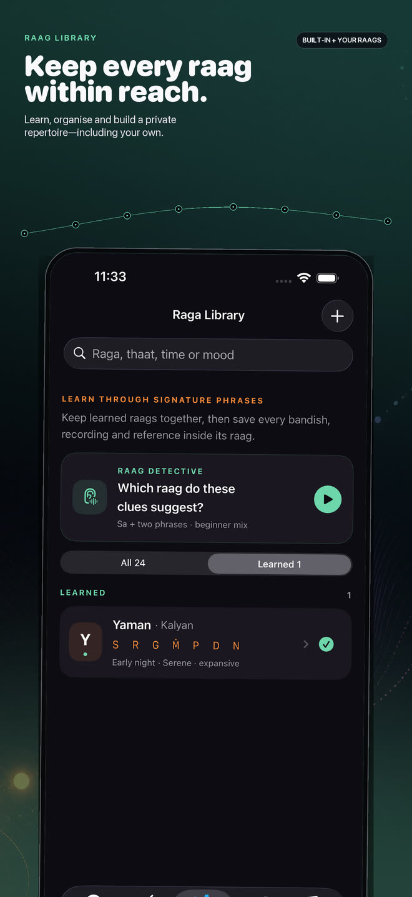
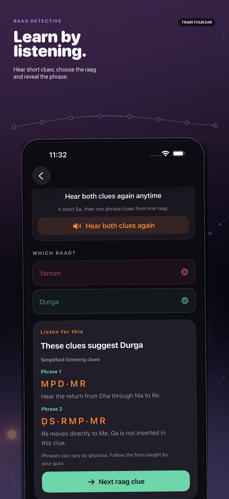

PRACTICE
Set your SUR. Choose a taal. Begin.
Play tabla and tanpura together, fine-tune your tonic, follow bols and matras, adjust BPM with ÷2, −5, +5 and ×2, and keep Laya coach within reach.
- Tabla
- Two tanpuras
- Tempo tools
- Background audio

Raag RiyazHindustani music practicePRACTICE • LISTEN • GROW
Tabla, tanpura, live swara guidance, recording, lesson notes and ear training—thoughtfully brought together for Hindustani classical musicians.

ONE APP, A FULL PRACTICE ROOM
Use a simple accompaniment when that is all you need, or go deeper with pitch work, laya games, lesson organisation and listening practice.
PRACTICE
Play tabla and tanpura together, fine-tune your tonic, follow bols and matras, adjust BPM with ÷2, −5, +5 and ×2, and keep Laya coach within reach.
PITCH LAB
Live Swara follows your voice in real time. Build steadiness, hear a target when you need it, practise alankars and train vocal leaps—all with on-device analysis.
CLASSROOM
Keep notes, homework, recordings, photos, scans and files together by lesson. Set a one-time homework reminder and return to the right date from the notification.
RAAG LIBRARY
Learn essential raag structure, mark what you know, create your own raags and attach notes, recordings, images or PDFs that matter to your musical journey.
RECORDINGS
Record directly from Practice, browse saved takes, play them without audio-session conflicts, rename or share them, and find Practice recordings again from Classroom.
INSIGHTS
See recent sessions and recordings, keep an eye on practice time and streaks, and optionally set one gentle daily reminder at a time you choose.
TRAIN SUR, LAYA AND LISTENING
Follow the swara you are actually singing, not the one you meant to sing.
Hold one swara steadily, move to the next, and tap Hear target whenever you need a reference.
Hear a target and train your ear-to-voice connection one note at a time.
Turn clear swara paths into muscle memory at your own pace.
Climb, mirror and fade phrases to practise clean leaps—not only straight scales.
Listen, tap and land on the chosen matra to strengthen your sense of taal.
Hear short clues, choose the raag and reveal the phrase behind the answer.
Track a steady exhale as one small, repeatable part of vocal preparation.
MORE CONTROL WHEN YOU WANT IT
INSIDE RAAG RIYAZ
Real screens from the app—designed for iPhone and iPad, with larger layouts that make room for focused practice.








PRIVATE BY DESIGN
Raag Riyaz has no account, no ads, no tracking SDK and no developer-operated analytics. Pitch analysis happens on device. Your recordings, lesson notes and repertoire stay in your app’s local storage unless you choose to export or share them.
Read the full privacy policyHERE WHEN YOU NEED HELP
Start with the quick answers below. If something still feels wrong, email the developer directly.
Check microphone access in device Settings, then reopen Raag Riyaz. After changing headphones or audio routes, make a short test recording.
Open Recordings from Practice. Export important recordings and notes somewhere you control before deleting the app or changing devices.
The daily reminder is optional and off by default in Insights. Homework reminders are set individually from Classroom. Permission is requested only when you choose one.
Photos and files use system pickers. On Apple devices, camera access appears only when you choose Scan. Android Scan uses Google Play services.
Delete individual takes, lesson attachments and repertoire items inside the app. Deleting Raag Riyaz removes its local app container, subject to device backups.
Include the app version, device, operating-system version and what happened. Please do not send private recordings or teacher notes unless necessary.
Email supportCore practice, recordings, pitch exercises, Classroom, Library and Insights are designed to work offline. Optional YouTube lessons, the fundraiser and App Store actions open external services and need a connection.
No. Raag Riyaz does not automatically upload recordings, pitch observations, notes or files to a developer-operated server. Content leaves only when you explicitly share or export it.
There is no Raag Riyaz account or cross-device sync. Export important items before changing devices. Apple device backups may retain app data; Android backup behavior is described in the privacy policy.
Bluetooth A2DP is playback-only. When a Bluetooth microphone is used, the device may switch to a lower-bandwidth hands-free route. For the clearest pitch and recording results, use the built-in or a wired microphone.
SUPPORTED PLATFORMS
The iPhone and iPad app supports iOS/iPadOS 16 or later. The Android app supports Android 8.0 or later. Core native practice features do not require an account or subscription.